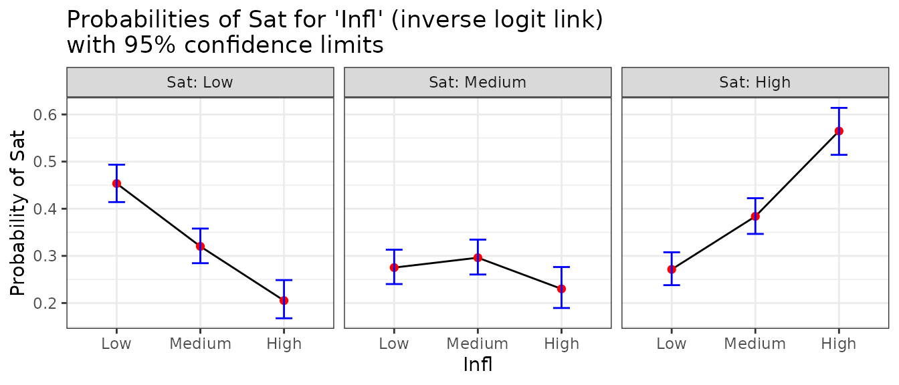

A response that is a class (a rating 1 to 5, low/medium/high
satisfaction, a colour) has no single mean. predictmeans()
gives means on the scale each model has, and the class probabilities on
request.
| model | fitted by | means (default) | other mean_type
|
|---|---|---|---|
| cumulative link, parallel slopes |
MASS::polr, ordinal::clm,
ordinal::clmm,
VGAM::vglm(cumulative / propodds / acat / cratio / sratio, parallel = TRUE)
|
the latent scale: one mean per level |
"prob" and "mean_class" add a table of
class probabilities or the mean class |
| multinomial, or slopes that are not parallel |
nnet::multinom, VGAM::vglm(multinomial),
vglm(..., parallel = FALSE)
|
"prob": each class probability, compared within its
class |
"prob_diff", "link",
"mean_class" (ordinal families) |
All tests are z tests (these models have no dispersion to estimate),
except clmm, which uses the inner-outer df of other mixed
models.
Parallel slopes: one latent scale
The wine data (ordinal): bitterness rated 1 to 5 by 9
judges, at two temperatures and with or without contact.
data(wine, package = "ordinal")
m <- ordinal::clm(rating ~ temp + contact, data = wine)
pm <- predictmeans(m, "temp:contact", pairwise = TRUE)
summary(pm)## Predicted means for 'temp:contact' (clm model; df: asymptotic (z))
## Confidence limits: 95%
## Scale: latent mean of rating (logit); differences are log odds ratios of a higher class, the same at every cut point; class probabilities: mean_type = "prob"
##
## temp contact estimate std.error df conf.low conf.high group
## cold no -2.0949 0.4682 Inf -3.0125 -1.1773 A
## cold yes -0.5671 0.3974 Inf -1.3460 0.2117 B
## warm no 0.4082 0.3983 Inf -0.3724 1.1888 B
## warm yes 1.9360 0.4400 Inf 1.0735 2.7984 C
##
## 6 pairwise comparisons.
## SED: min 0.4766, mean 0.5713, max 0.7765
## LSD (5%): min 0.9342, mean 1.12, max 1.522 (they differ: use each pair's p-value or LSD)
## p-values: z tests, adjusted by 'none'.
## Means sharing a letter are not significantly different at the 5% level.
## Comparison intervals: mean +/- 1.313 SE (81.1% intervals); means differ at the 5% level when these do not overlap (the SEDs differ: approximate, but every pair here agrees with its test). The 95% confidence limits are not for comparing means.
##
## Advice:
## i 6 pairs tested without adjustment: some will be significant by chance. If
## they are a family, use adj = "holm" (any design) or "tukey"/"mvt" (all
## pairs).The means are on the latent scale, x’b minus the mean cut point
(emmeans’ mode = "latent"). A difference of 2.5 between
warm and cold is a log odds ratio: at every cut point the odds of a
higher rating are exp(2.5) = 12 times larger when warm. The same model
by polr() or vglm(propodds) gives the same
means.
The class probabilities of each mean:
pp <- predictmeans(m, "temp:contact", mean_type = "prob")
head(pp$probs, 5)## temp contact class estimate std.error conf.low conf.high
## 1 cold no 1 0.20679013 0.08481920 0.086441084 0.41802603
## 2 cold no 2 0.57064970 0.08683884 0.398871093 0.72694468
## 3 cold no 3 0.19229094 0.06388672 0.096094192 0.34773992
## 4 cold no 4 0.02361882 0.01380264 0.007429029 0.07251284
## 5 cold no 5 0.00665041 0.00482850 0.001595527 0.02728234
predictmeans(m, "temp:contact", mean_type = "mean_class")$probs## temp contact estimate std.error conf.low conf.high
## 1 cold no 2.052690 0.1499310 1.785946 2.371337
## 2 cold yes 2.670937 0.1660160 2.357106 3.002357
## 3 warm no 3.108557 0.1809520 2.754205 3.456202
## 4 warm yes 3.848147 0.1849167 3.455278 4.174685The mean class scores the classes 1, 2, 3, … as equally spaced; the advice says so.
Judges as random effects
mm <- ordinal::clmm(rating ~ temp + contact + (1 | judge), data = wine)
pmm <- predictmeans(mm, "temp", mean_type = "prob")
pmm$means[, c("temp", "estimate", "std.error", "df")]## temp estimate std.error df
## 1 cold -1.634307 0.5470711 58
## 2 warm 1.428690 0.5315304 58
advice(pmm)$text## [1] "The class probabilities are at the latent means, which average over (or fix) contact: not averages of the probabilities in each cell (as emmeans gives). Include contact in 'modelterm' for the probabilities of each cell."
## [2] "The class probabilities are for a typical subject (random effects at 0; random-effect SD 1.1 on the latent scale): averaged over subjects they are less extreme. Population-average probabilities are not yet available; the comparisons on the latent scale (the pairs) hold for every subject."The means are for a typical judge (random effects at 0), and so are the class probabilities: averaged over judges they are less extreme. The df are inner-outer: with few judges, z tests reject a true null too often (11% at the 5% level with 6 clusters in a simulation).
Multinomial and non-parallel fits: class probabilities
Satisfaction with housing (MASS::housing, counts in
Freq):
data(housing, package = "MASS")
mh <- nnet::multinom(Sat ~ Infl + Type + Cont, weights = Freq, data = housing, trace = FALSE)
ph <- predictmeans(mh, "Infl", pairwise = TRUE)
summary(ph)## Predicted means for 'Infl' (multinom model; df: asymptotic (z))
## Confidence limits: 95%
## Scale: logit of the probability of each class of Sat (column 'Sat'), back-transformed in 'response'; pairs within a class: log odds ratios of that class against all the others (not the model's coefficients, which compare classes with the reference class)
##
## Infl Sat response.std.error estimate std.error df conf.low conf.high
## Low Low 0.02028 -0.1866 0.08182 Inf -0.34693 -0.02619
## Medium Low 0.01876 -0.7533 0.08622 Inf -0.92226 -0.58430
## High Low 0.02065 -1.3542 0.12664 Inf -1.60240 -1.10597
## Low Medium 0.01860 -0.9686 0.09327 Inf -1.15145 -0.78582
## Medium Medium 0.01889 -0.8658 0.09064 Inf -1.04345 -0.68813
## High Medium 0.02219 -1.2082 0.12529 Inf -1.45370 -0.96259
## Low High 0.01781 -0.9878 0.09008 Inf -1.16431 -0.81122
## Medium High 0.01937 -0.4736 0.08192 Inf -0.63417 -0.31305
## High High 0.02550 0.2606 0.10373 Inf 0.05729 0.46392
## response response.conf.low response.conf.high group
## 0.4535 0.4141 0.4935 A
## 0.3201 0.2845 0.3579 B
## 0.2052 0.1676 0.2486 C
## 0.2752 0.2402 0.3131 AB
## 0.2961 0.2605 0.3344 A
## 0.2300 0.1894 0.2764 B
## 0.2714 0.2379 0.3076 A
## 0.3838 0.3466 0.4224 B
## 0.5648 0.5143 0.6139 C
##
## 9 pairwise comparisons within each level of Sat.
## SED: min 0.1131, mean 0.1345, max 0.1521
## LSD (5%): min 0.2217, mean 0.2636, max 0.2982 (they differ: use each pair's p-value or LSD)
## p-values: z tests, adjusted by 'none'.
## Means sharing a letter are not significantly different at the 5% level within each level of Sat.
## Comparison intervals: mean +/- 1.347 SE (82.2% intervals); means differ at the 5% level when these do not overlap (the SEDs differ: approximate, but every pair here agrees with its test). The 95% confidence limits are not for comparing means.
## Back-transformed by the inverse link: 'response' is the probability of the class, averaged over the other factors on the response scale.
##
## Advice:
## i 9 pairs tested without adjustment: some will be significant by chance. If
## they are a family, use adj = "holm" (any design) or "tukey"/"mvt" (all
## pairs).
## i The class probabilities average those of each cell over Type, Cont on the
## probability scale (as emmeans' mode = "prob"; equal weights), not the
## probabilities at an average linear predictor.Each class probability is a mean; the class (Sat) is a
factor of the means, and the pairs are within each class. By default the
probabilities are compared on the logit scale, as a binomial glm: the
limits stay inside 0 to 1, and a pair is the odds ratio of that class
against all the others (not the model’s coefficients, which compare
classes with the reference class). With two classes the results are
those of the binomial glm.
autoplot(ph, scale = "response")
Differences of probabilities, as emmeans’
mode = "prob":
pd <- predictmeans(mh, "Infl", mean_type = "prob_diff")
head(pd$pairs[, c("level1", "level2", "by", "estimate", "std.error", "p.value")], 3)## level1 level2 by estimate std.error p.value
## 1 Low:Low Medium:Low Low 0.1333877 0.02629866 3.935871e-07
## 2 Low:Low High:Low Low 0.2483074 0.02808884 9.565552e-19
## 3 Medium:Low High:Low Low 0.1149197 0.02685399 1.873753e-05For two means these differences sum to zero over the classes. Near 0 or 1 they are less exact than the logit-scale tests; the advice says so when it applies.
The model’s own linear predictors (mean_type = "link")
give exact Wald tests on the model scale, but for a multinomial model
each depends on the reference class.
A non-parallel cumulative fit (the effect of influence differs between cut points) gives the same tables, and also the mean class:
vh <- VGAM::vglm(Sat ~ Infl + Type + Cont, VGAM::cumulative(parallel = FALSE ~ Infl), weights = Freq,
data = housing)
predictmeans(vh, "Infl", mean_type = "mean_class")$means## Infl estimate std.error df conf.low conf.high comparison.low
## 1 Low 1.814062 0.03353481 Inf 1.748335 1.879789 1.769153
## 2 Medium 2.063884 0.03365839 Inf 1.997915 2.129853 2.018809
## 3 High 2.361506 0.04105265 Inf 2.281044 2.441968 2.306528
## comparison.high n estimable
## 1 1.858972 24 TRUE
## 2 2.108959 24 TRUE
## 3 2.416483 24 TRUEThings predictmeans checks
- Averaging over other factors. Class probabilities are averaged over the other factors on the probability scale (the share of each class over their levels), as emmeans. For parallel models the latent means are averaged instead and then turned into probabilities.
- Separation. A class with no observations at some level puts its probability at 0, where the standard errors are not usable; a caution names the classes and levels.
- Crossing curves. In non-parallel cumulative fits the cumulative curves can cross, giving negative probabilities at some levels or covariate values. Means that use such a point are NA, with a caution; the other means are kept.
-
Aggregated counts. With
weights = "proportional"the factor combinations are weighted by their number of cases (the sums ofFreqhere), so aggregated data and one row per case agree. -
Not available.
trans,bias_adjust,vcovandpermliststop for these models, andcontrastmeans(),covariatemeans(),residplot()and others stop for multinomial and non-parallel fits.
Checks
- Latent means, pairs and class probabilities equal emmeans to 1e-6
(
polr,clm,clmm). -
clmandvglmagainst SAS PROC LOGISTIC and GLIMMIX (logit, probit, cloglog, adjacent-category; class probabilities to 4e-7). -
multinomclass probabilities, SEs and both kinds of pairs equal emmeans to 1e-8;vglm(multinomial)equalsmultinom; non-parallelcumulative,cratioandsratioequalpredict()with SEs by a numerical delta method.
The tests are in tests/testthat/test-ordinal.R,
test-ordinal-sas.R and test-categorical.R.